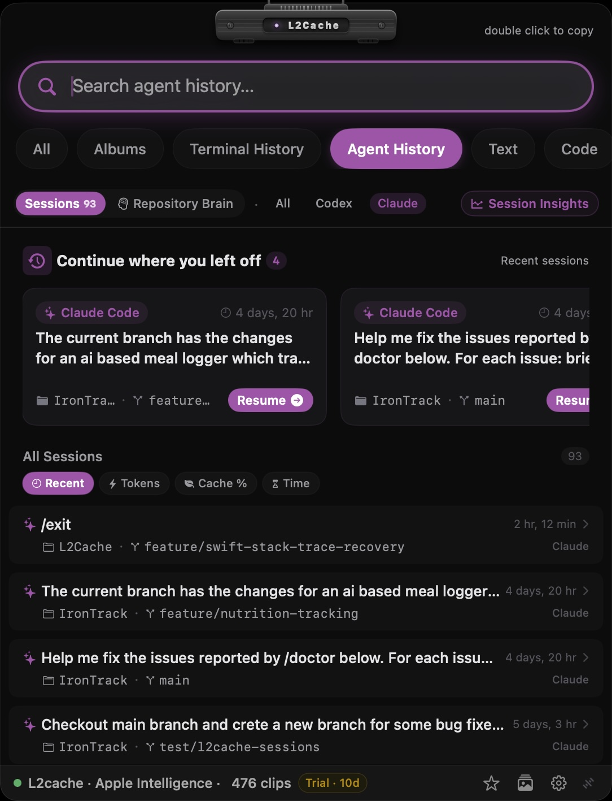
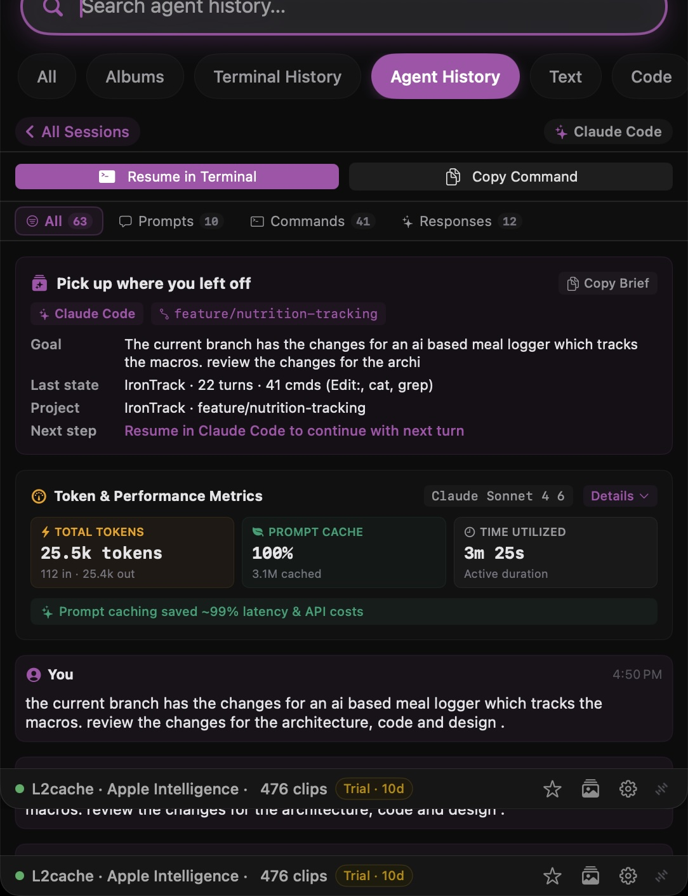

Software engineering workflows have undergone a massive shift. Developers no longer rely solely on basic autocomplete; today, we pair with autonomous CLI coding agents like Claude Code and Codex to execute multi-turn refactors, write unit tests, and resolve complex edge-case bugs across full repositories.
| Claude Code Logs: | ~/.claude/projects/*/ (JSONL transcripts) |
| Codex CLI Logs: | ~/.codex/memories.sqlite |
| CLI Resume Command: | claude --resume <session-id> |
| GUI Search & Token Tracker: | L2Cache for Mac (1-click resume & token analytics) |
The Multi-Agent Visibility Gap: Autonomous agents generate vast amounts of session history, token consumption, prompt cache metrics, and discovered repository constraints. Yet, these logs remain trapped in hidden local files. Without a unified dashboard, developers lose track of past session context, waste money re-prompting agents, and watch different agents make the exact same coding mistakes over and over.

When running agentic coding assistants in your terminal, every prompt, tool response, and diff is recorded locally on disk:
~/.claude/projects/. Project directories contain raw JSONL session records with timestamps, tokens, and bash tool output.~/.codex/memories.sqlite.While these logs exist on disk, opening raw JSONL files in VS Code or querying SQLite manually while debugging is tedious. L2Cache continuously indexes these local directories in real time with zero server round-trips.
One of the most frustrating parts of using CLI agents is resuming a session after switching terminals or closing a window. While the native CLI claude --resume picker lists recent sessions, it only displays the initial prompt of each session. You cannot search across middle turns, tool outputs, terminal commands, error tracebacks, or modified file names across past projects:
# Native session resumption in CLI
claude --resume a85fd1e8-3b4a-4f12-89cd-7e62a104f982
codex resume session_2026_09_08_build
With L2Cache, session resumption is seamless:
⌥Space) to see full turn-by-turn prompts, tool executions, and file edits.In L2Cache 1.4, we introduced native AI Agent History & Analytics—bringing full visibility to your CLI agent sessions directly from your Mac's menu bar or global hotkey.
View total input tokens, output tokens, and overall token consumption for every session across Claude Code and Codex. Instantly identify token-heavy prompts or runaway context loops before they inflate API bills.
Track cacheReadTokens and prompt cache hit ratios. See exactly how effectively your agent sessions leverage LLM prompt caching, allowing you to optimize prompt structures for maximum speed and cost efficiency.
Sort past sessions by Recent Activity, Total Tokens, Prompt Cache Hits, or Runtime Duration. Filter sessions by provider (Claude vs. Codex) or search through full conversation histories instantly with SQLite FTS5 fast search.
When an agent spends 20 turns debugging a subtle AppKit threading bug, a SQLite concurrency issue, or a custom build flag constraint, it learns vital facts about your codebase. But when that session finishes, those insights often stay buried in local log archives.
L2Cache's Repository Knowledge Graph bridge converts transient agent discoveries into permanent repository documentation:

# Example AGENTS.md rule promoted from agent session #a85fd1e8
## AppKit & SwiftUI Concurrency Rules
- guard `view.window != nil` before displaying popovers in async tasks to prevent EXC_BAD_ACCESS.
- Never perform DB reads/writes on the main thread; use `Task` with `await`.
AGENTS.md or CLAUDE.md file.Just like L2Cache's core clipboard management, all Agent History & Analytics parsing occurs strictly on-device on your Mac. L2Cache reads local session logs directly from your home directory, stores analytics in local SQLite databases using GRDB, and never sends your prompts, code snippets, or token statistics to external servers.
Claude Code stores local conversation transcripts and project histories as JSONL files in ~/.claude/projects/ on macOS. Each session contains turn-by-turn prompts, tool executions, and file modifications.
OpenAI Codex CLI stores agent execution memories and session databases in ~/.codex/memories.sqlite on your local disk.
Run claude --resume in your terminal to pick from recent sessions, or pass the specific session ID with claude --resume <session-id>. To search full past tool calls, file diffs, and prompts, use L2Cache's 1-click terminal resume panel.
L2Cache automatically parses local agent logs in real time, displaying input/output tokens, prompt cache hit ratios (cacheReadTokens), and session durations directly in a lightweight Mac menu bar panel.
Experience fast floating panel access, zero-cloud clipboard history, and native AI Agent History on macOS today.
Try L2Cache Free